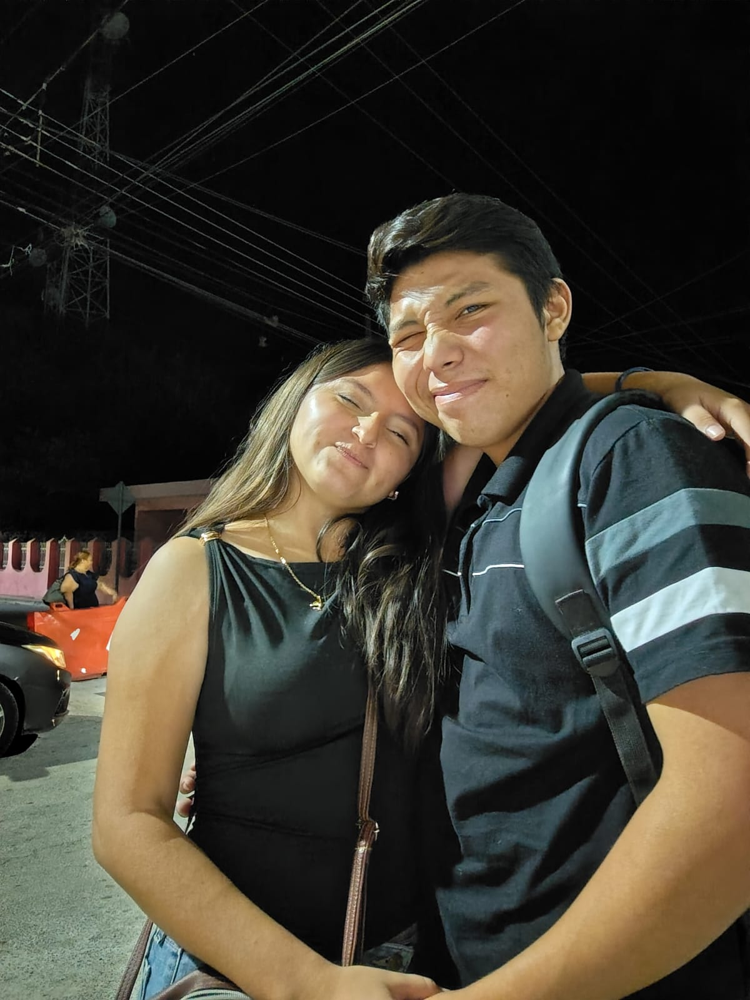
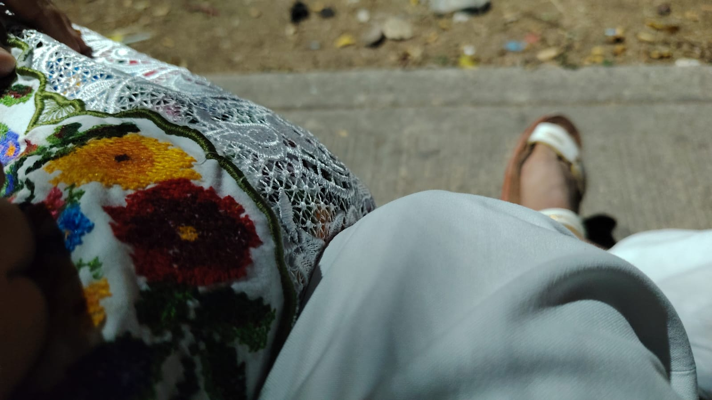

Hola... sé que pensabas que ya no existía.
Te escribo desde ese lugar silencioso donde se guardan las versiones de nosotros que un día dejamos atrás. Durante mucho tiempo me diste por perdido, creíste que el ruido de los días, los errores y el paso del tiempo me habían borrado por completo. Y aunque estuve quieto, esperando en la sombra, nunca me fui del todo.


Soy esa versión de mí que no sabía de prisas ni de orgullos; el que miraba los detalles más sencillos —un bordado, una tarde tranquila, el simple roce de tu mano— como si fueran el centro del mundo. Hoy toco a tu puerta porque me cansé de ser solo un recuerdo guardado en fotografías viejas.
Quiero volver. No vengo a pedir que el tiempo retroceda ni a fingir que nada pasó, sino a pedir permiso para regresar y volver a vivir en mi propia piel. Quiero habitar de nuevo quien fui cuando estaba contigo, pero con los ojos más abiertos y el corazón más despierto.
Si todavía queda un espacio donde pueda respirar, déjame regresar. Prometo cuidar esa piel, honrar lo que fuimos y construir, desde la calma, todo lo que aún nos falta por vivir.
Siempre tuyo, el que nunca dejó de esperarte,